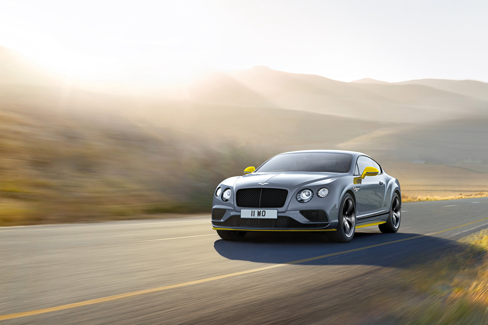
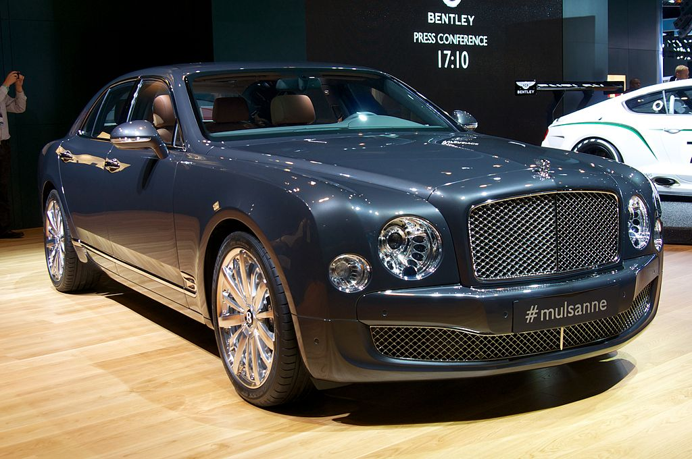
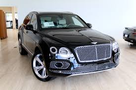
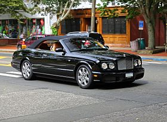

 Following World War II, Bentley moved to resume production of civilian automobiles, and its factory was relocated from Derby to Crewe. There, Bentley engineers produced so-called R-Type Continentals for three years, from 1952 to 1955. These were derivatives of the original R-Type, the second series in Bentley's postwar luxury lineup.[citation needed].The R-Type Continental's chassis was independently produced and sold to custom coach-builders. One of the world's most expensive automobiles,only about 208 R-Type Continentals were built in total.Following the R-Type Continental, the Continental S1, S2 and S3 were released consecutively beginning in 1955. The S1 was well received, 49 being built. The deficiency was addressed on later vehicles, such as the Bentley S1. The S2, unveiled in 1959, debuted with a new L Series V-8 engine,[citation needed] still used in contemporary Bentleys like the Mulsanne. It also incorporated air conditioning and standard power-steering, considered cutting-edge amenities at the time. The S3, for its part, was distinguishable by its "four-headlamps in the front wings."During the 1950s and early '60s, the Bentley Continental was marketed for its powerful engine and lowered suspensions, thought to improve performance for high-speed touring. The fastback coupe's distinctive angle-free, lightweight design also helped establish its British manufacturers' prosperity for the post-war era.In 2015 a 1952 R Type Continental, in unrestored condition, sold for over $1 million USD.The second generation of the Continental ended in 1965 with the introduction of the replacement T Series.The Continental nameplate would not be revived until 1984.The next-generation Bentley Continental is scheduled for 2018, and it will include a plug-in hybrid variant. Bentley will borrow the plug-in hybrid powertrain from the Porsche Cayenne S E-Hybrid.Components for Bentley Continental will be sourced from Volkswagen's plants in Germany and Slovakia, with stampings from Volkswagen's factory in Bratislava. Porsche's plant in Leipzig will be responsible for assembling bodies-in-white, along Porsche's Panamera. Bentley's factory in Crewe will carry out final assembly.The S3, for its part, was distinguishable by its "four-headlamps in the front wings."During the 1950s and early '60s, the Bentley Continental was marketed for its powerful engine and lowered suspensions, thought to improve performance for high-speed touring. The fastback coupe's distinctive angle-free, lightweight design also helped establish its British manufacturers' prosperity for the post-war era.In 2015 a 1952 R Type Continental, in unrestored condition, sold for over $1 million USD.The second generation of the Continental ended in 1965 with the introduction of the replacement T Series.The Continental nameplate would not be revived until 1984.The next-generation Bentley Continental is scheduled for 2018, and it will include a plug-in hybrid variant. Bentley will borrow the plug-in hybrid powertrain from the Porsche Cayenne S E-Hybrid.
 Following World War II, Bentley moved to resume production of civilian automobiles, and its factory was relocated from Derby to Crewe. There, Bentley engineers produced so-called R-Type Continentals for three years, from 1952 to 1955. These were derivatives of the original R-Type, the second series in Bentley's postwar luxury lineup.[citation needed].The R-Type Continental's chassis was independently produced and sold to custom coach-builders. One of the world's most expensive automobiles,only about 208 R-Type Continentals were built in total.Following the R-Type Continental, the Continental S1, S2 and S3 were released consecutively beginning in 1955. The S1 was well received, 49 being built. The deficiency was addressed on later vehicles, such as the Bentley S1. The S2, unveiled in 1959, debuted with a new L Series V-8 engine,[citation needed] still used in contemporary Bentleys like the Mulsanne. It also incorporated air conditioning and standard power-steering, considered cutting-edge amenities at the time. The S3, for its part, was distinguishable by its "four-headlamps in the front wings."During the 1950s and early '60s, the Bentley Continental was marketed for its powerful engine and lowered suspensions, thought to improve performance for high-speed touring. The fastback coupe's distinctive angle-free, lightweight design also helped establish its British manufacturers' prosperity for the post-war era.In 2015 a 1952 R Type Continental, in unrestored condition, sold for over $1 million USD.The second generation of the Continental ended in 1965 with the introduction of the replacement T Series.The Continental nameplate would not be revived until 1984.The next-generation Bentley Continental is scheduled for 2018, and it will include a plug-in hybrid variant. Bentley will borrow the plug-in hybrid powertrain from the Porsche Cayenne S E-Hybrid.Components for Bentley Continental will be sourced from Volkswagen's plants in Germany and Slovakia, with stampings from Volkswagen's factory in Bratislava. Porsche's plant in Leipzig will be responsible for assembling bodies-in-white, along Porsche's Panamera. Bentley's factory in Crewe will carry out final assembly.The S3, for its part, was distinguishable by its "four-headlamps in the front wings."During the 1950s and early '60s, the Bentley Continental was marketed for its powerful engine and lowered suspensions, thought to improve performance for high-speed touring. The fastback coupe's distinctive angle-free, lightweight design also helped establish its British manufacturers' prosperity for the post-war era.In 2015 a 1952 R Type Continental, in unrestored condition, sold for over $1 million USD.The second generation of the Continental ended in 1965 with the introduction of the replacement T Series.The Continental nameplate would not be revived until 1984.The next-generation Bentley Continental is scheduled for 2018, and it will include a plug-in hybrid variant. Bentley will borrow the plug-in hybrid powertrain from the Porsche Cayenne S E-Hybrid.
 Expand below for original cost option list. Heavily equipped, Southern California Bentayga. CARFAX One-Owner. Clean CARFAX. Recent Arrival! Odometer is 1185 miles below market average! 1 Owner, Certified Bentley. 2018 Bentley Bentayga W12 AWD 8-Speed Automatic 6.0L 12-Cylinder PDI Turbocharged DOHC Certified. Certification Program Details: Certified Pre-Owned with Warranty Original Cost Options: - Contrast Stitching - Embroidered Bentley Emblems - Hand Stitching to Steering Wheel in Contrast Colour - Front Seat Comfort Specification - Sunshine Specification - Rear Privacy Glass - Deep Pile Overmats to Front and Rear - Veneered Centre Fascia Panel - Advanced Technology Specification - 21" Five Twin-Spoke Black and Diamond Turned Wheel.Navigation System,AM/FM radio,CD player,DVD-Audio,MP3 decoder,Radio data system,Radio: AM/FM/DAB w/CD/DVD & Navigation,Air Conditioning,Automatic temperature control,Front dual zone A/C,HVAC memory,Rear air conditioning,Rear dual zone A/C,Rear window defroster,Memory seat,Power driver seat,Power steering,Power windows,Remote keyless entry,Steering wheel memory,Steering wheel mounted audio controls,Adaptive suspension,Auto-leveling suspension,Four wheel independent suspension,Speed-sensing steering,Traction control,4-Wheel Disc Brakes,ABS brakes,Dual front impact airbags,Dual front side impact airbags,Front anti-roll bar,Low tire pressure warning,Occupant sensing airbag,Overhead airbag,Power adjustable front head restraints,Rear anti-roll bar,Power moonroof,Power Liftgate,Blind spot sensor: warning,Brake assist,Electronic Stability Control,Exterior Parking Camera Rear,Auto High-beam Headlights,Delay-off headlights,Fully automatic headlights,Headlight cleaning,Security system,Speed control,Auto-dimming door mirrors,Bodyside moldings,Bumpers: body-color,Door auto-latch,Heated door mirrors,Power door mirrors,Spoiler,Turn signal indicator mirrors,Auto tilt-away steering wheel,Auto-dimming Rear-View mirror,Compass,Driver door bin,Driver vanity mirror,Front reading lights,Garage door transmitter,Genuine wood console insert,Genuine wood dashboard insert,Genuine wood door panel insert,Heated steering wheel,Illuminated entry,Leather steering wheel,Outside temperature display,Overhead console,Passenger vanity mirror,Rear reading lights,Rear seat center armrest,Sport steering wheel,Tachometer,Telescoping steering wheel,Tilt steering wheel,Trip computer,Voltmeter,Front Bucket Seats,Front Center Armrest,Heated Front Bucket Seats,Heated front seats,Heated rear seats,Leather Seat Trim,Power passenger seat,Passenger door bin,20" 10 Spoke Cast Gloss Black Alloy Wheels,Rain sensing wipers,Rear window wiper,Variably intermittent wipers,Axle Ratio.
 The Azure debuted in March 1995 at the Geneva Motor Show on the platform of the Continental R model, which had been originally launched in 1991. Production only crept to a start, with a mere nine examples finished in the first year – in 1996, after full production had started, no less than 251 Azures were finished.Pininfarina assisted in the two-year process of turning the Continental R into a full four-seater convertible, and also built the shell and soft-top at their factory in Italy, largely from parts sourced in the UK. Final assembly was then carried out at Crewe. A roll-bar was never considered, which necessitated extensive reinforcing of the chassis. At 210 in (5,340 mm) in length and 5,750 pounds (2,610 kg) in weight, the Azure often surprised onlookers with its size and bulk, intended to both convey a sense of "presence" and allow for comfortable seating of four adult passengers.Power came from the company's stalwart 6.75-litre V8, featuring a single, intercooled Garrett turbocharger and producing in the region of 360 hp – Rolls-Royce and Bentley did not yet give official power numbers at the time of the Azure's introduction.By the time production began in earnest, new engine management from Zytek meant a slight power increase to 385 hp (287 kW; 390 PS) at 4,000 rpm and 750 N⋅m (553 lb⋅ft) of torque at 2,000 rpm; power was routed to the rear wheels via a modified, General Motors sourced, four-speed automatic transmission. With a zero to sixty miles per hour time of 6.3 seconds (0–100 km/h in 6.5 s) and a top speed of 241 km/h (150 mph), the Azure was very fast for a car of its size, weight and poor aerodynamic profile.Owing to the limited space and workforce at Bentley's Crewe factory, the Azure's thick, powered convertible top was designed and manufactured by Pininfarina, which significantly added to the vehicle's cost. New in 1995, the Azure was priced at $347,645 – $36,355 more than the Continental R on which it was based.From 1999 until the end of production, the Azure was also available in "Mulliner" trim, which added special bespoke trim and additional equipment and allowed the buyer the option for further customisation during the build-process; pricing varied by car, as equipment could be significantly different from one to the next depending on customer requests.One of limited editions included '2000 Symbolic Edition', an only 4-made Mulliner commission.A roll-bar was never considered, which necessitated extensive reinforcing of the chassis.